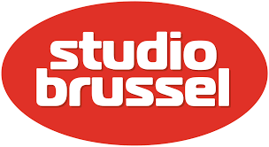

Radio Playlists
View the latest songs played on your favorite radio stations
KINK
KINK is a Dutch radio station that focuses on alternative rock and indie music. View the latest tracks played on KINK radio.
View Playlist

Studio Brussel
Studio Brussel is a Belgian radio station known for its alternative music programming. Check out what's playing on Studio Brussel.
View Playlist